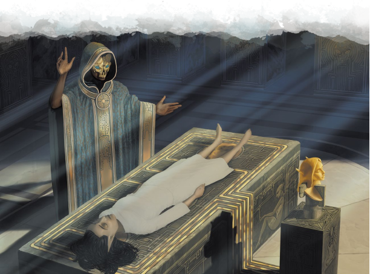

作为艾伦诺精灵的一员，你过着和科瓦雷的人们截然不同的生活。你出生在一个被古老而强大的精魂守护与引导的国度。你在千年之前就已身死的导师门下学习，而你知道即使是之后数个世纪的生命，也只是灵魂旅程的开始。你的人民拥有安黛尔无法触及的秘法学识；而不朽王庭牧师们具有的力量只有银焰的守护者能够匹敌。你来自一片奇迹之地，一个字面意义上由神圣力量引导的国度。简而言之，你的人民已经达到了完美的境地。作为一位艾伦诺精灵，你不会希望改善你的社会；你的任务是证明你自己配得上它，并赢得在死后的生命。
艾伦诺精灵以骄傲和居高临下的态度著称。精灵们没有理由不如此。对你而言，人类就像是孩子，生命短暂，他们都急于完成任务而不计代价。即使是居住在科瓦雷的精灵也抛弃了先祖的传统和神圣的家园。这很容易让人自鸣得意...但谁会喜欢身边有个这样的角色？艾伦诺精灵不必显得令人生厌，你是一个来自神秘和魔法的王国的旅行者。你拥有古老的智慧，并与神圣的精魂相连。除此之外，不朽王庭的议员们是世界上少数能够窥见巨龙预言的力量之一。你是作为一位不朽王庭的使节还是一位预言的特工来到科瓦雷？你是为一个贵族家族工作，追求商业上的利益，还是追寻一件多年以前从你的人民那里窃走的文物？你是否是一位人类学者，对他们的行为深深着迷？你是否是一位效忠于死亡守卫的圣武士，旨在毁灭任何你所找到的不死生物？或者你是一个流亡者，被驱逐出你的家园，被迫在野蛮的族裔之中生活？
无论你是扮演一位艾伦诺精灵角色还是遭遇作为NPC的他们，这一节都提供了关于这片精灵之地的深入了解。此外，第六章中提供了艾伦诺精灵亚种和适用的专长。

艾伦诺的简介A Brief Guide to Aerenal
艾伦诺是一个与世隔绝的国度，对外界鲜有兴趣。他们不曾畏惧被征服；不朽王庭的神力甚至击退了巨龙军团的进攻。但不朽王庭的力量并没有延伸到艾伦诺之外的世界，精灵们选择留在他们的天堂之中，而不是向世界各地扩张。在这个岛屿庇护所里，他们见证了达坎帝国的兴衰，而他们认为艾伦诺将在五国都化为灰烬之后很久依然屹立不倒。关于艾伦诺，还有一些更加重要的事情。
不朽王庭The Undying Court
艾伦诺由生者统治。在莎尔·凯黛尔统治整个国家的血脉双王，高等祭司和各个宗族的领主都是活着的精灵。但亡者引导并保护着生者。当非凡的精灵们死去时，他们在死后被保存下来。大部分精灵与精魂偶像相绑定，能够保护他们的灵魂，防止他们被溶解在杜鲁尔中。但另一些精灵则会作为永生的、由正能量维持的、类似木乃伊的不死生物。永生的士兵们守卫着陵墓与庙宇，而永生的贤者和议员则与后辈分享着他们的知识与智慧。久而久之，这些不朽者会擢升到更高的境界，成为不需要身体的精魂存在。这些被称为至尊议员的精灵居住于伟大的城市莎尔·莫黛依，当他们的灵魂以一种神秘的形式联结为一体时，他们就会具有神性的力量。
大部分外来者认为至尊议员们就是不朽王庭，而他们的确是其力量的来源。但不朽王庭指的是这座岛屿上所有的不死卫士们，从士兵们到精魂偶像。你也许并不期望能成为一位至尊议员——这是一个通常需要耗费数千年的擢升过程——但你也能向往在死后加入不朽王庭之中。
作为一位艾伦诺精灵，你非常清楚自己对不朽王庭的责任。永生由正能量所维持；而能量能来自伊瑞安的显能区域——比如莎尔·莫黛依的显能区域——但它同样也能通过爱和奉献产生。不像艾伯伦的其他宗教，不朽王庭并不依赖于信仰；王庭本身的存在毋庸置疑。但它的确依赖于奉献。你的祷告和信仰就是你所奉献的一切，作为王庭对你和人民所做的一切的交换——让你的土地免于侵略、瘟疫和自然灾害的侵扰，引导你们的领袖和年轻一辈。先祖庇护着你们，但他们依然需要你们的奉献才能生存。
|
边栏：精魂偶像Spirit Idols 不死状态并非体验永恒的唯一途径。艾伦诺最受尊敬的死者都会被保存于精魂偶像之中，以保护其灵魂不会因杜鲁尔而消亡。这是一尊死去精灵的石头半身像，其中嵌入他们尸体的遗物（骨头碎片、一缕头发等）。处于休眠状态时，雕像中的精魂不会意识到外面的世界和时间的变化，他们处于一种持续的出神状态——一种由记忆和个人体验构成的类似梦境的存在。一尊精魂偶像能够被死者交谈speak with dead法术唤醒，但一些精灵会无限期地保持着清醒的状态，并能担任导师、教士和法官。 并非所有艾伦诺精灵都希望成就不朽——许多经历认为精魂偶像是更加合适的死后状态。不朽者们发誓要保护并服务于生者，并且必须处理肉体形态持续存在的不便；而在精魂偶像之中，一个精灵能够在自己制作的梦中经历永恒的宁静。对于许多艾伦诺精灵来说，他们活着时最大的目标便是收集用于死后陪伴自己的记忆和想法。尽管精魂偶像的数量多于不朽者，也并非所有亡者都能以这样的形式保存。精魂偶像是为了那些证明自己值得永恒存在的精灵而留存。普通的死者在死后会进行防腐处理，并和他们生前经历的记录一同埋葬入土地之下的巨大墓穴中。只有那些犯下了真正令人发指罪行——比如盗墓——的恶徒，才会被剥夺记忆；这些罪犯在死后被烧毁，骨灰撒入大海之中，而他们生前的记录亦不会留存。 |
魔法王国A Magic Kingdom
无论是奥术还是神术魔法，它们在艾伦诺的文明都比在五国中融入地更深。艾伦诺的每位公民都至少掌握了一种实用的戏法；科瓦雷魔法大师的技艺在艾伦诺会仅仅被视作学徒的训练。在这里，五环以上的法术效应已经编织进了日常的生活之中。
传送法阵Teleportation circles将艾伦诺的大城市相连，短讯术sending基站则允许人们和远处的方便地进行联系。建筑由塑石术stone shape 的原理拔地而起。预言师们和其他位面进行沟通，而治疗者们能够打破诅咒并解除石化。在法师宗师和高级祭司手里能见到高达7环的法术效果，而艾伦诺奇械师们能造出极珍惜的魔法物品。当你在探索科瓦雷以及其他土地时，请记住，在你的艾伦诺精灵角色眼中，这些地方不过是原始的穷乡僻壤。
臻于往昔Perfection in the Past
乍一眼看去，由于他们卓越的职业道德和漫长的寿命，艾伦诺的人民比他们科瓦雷的同等的角色上在任何事情上都要做得更好。一位艾伦诺匠人能够花费人类数代生命的时光来完善他们的工艺。即使是在出神时，精灵也可能在思考他们的工作。然而，艾伦诺在工业化和创新的方面落后于科瓦雷。艾伦诺精灵并不想找到更好的方法来完成一件事情；精灵工匠们的目标是让自己的记忆匹敌于过去的大师，而非寻找新的技术。挑战过去是对那些古代的大师的侮辱——而在艾伦诺，他们仍然在活人的身边，传授着他们的技术。一位艾伦诺奇械师可以创造出没有哪个卡尼斯熔炉的造物能比拟的极珍惜物品，但这件作品需要数年时间以手工创造，而卡尼斯家族的熔炉正在大量生产着普通和非普通的魔法物品，并不断寻找创新的方法。五国可能无法和今天的艾伦诺相提并论，但在过去千年之间它发生了天翻地覆的改变，而艾伦诺仍然没有进步。你从未被鼓励去发明创造；你被教导古道乃是最好的方法。而你是否同意这一点？
贵族血脉Noble Lines
艾伦诺实际是城邦的结合体，由血脉双王和不朽王庭所统治。这个国度的每一片地区（除了北方的泰尔那多）都由一条贵族宗族所统治。艾伦诺最初的移居者们来自不同的文化和环境，而这些宗族则反映了这一点：虽然所宗族都在艾伦诺精灵的共同习俗下统一，但每一个都有着自己独特的特别风尚和传统。宗族是在一个持有家系名称的贵族家族统治下的古老家系的联合。因此“梅黛瑞恩宗族”指许多个家族，但使用这个姓氏的精灵——比如贝勒瑞斯·梅黛瑞恩——则是该贵族宗族的一员。贵族宗族是这一地区最为优秀的精灵们；它并非世袭的家族，而是从该地区的民众中选出来的精英们。同样，血脉双王——这个联合王国的统治者——是来自同一宗族的成员，是名义上的兄弟姐妹，但他们并非血亲。因此，在活着的时候，精灵们渴望被提升为宗族的一员；而在死后，他们则希望被拔擢到不朽王庭之中。
在创造一个艾伦诺精灵角色时，你可以和DM讨论完善关于你家庭和从属宗族的信息。由于每个宗族都都是许多家族组成，即使在现有的宗族中，也有足够的空间添加你自己的细节。下面将会介绍一些贵族宗族，但请将它们视作是灵感的来源而非一种限制。
裘利安Jhaelian.裘利安宗族统治着泰尔·凯琳德尔周围的的土地，裘利安宗族有着深厚的灵性传统；其成员都效力于不朽王庭和冥思神圣的秘密。这一宗族产生了许多武僧、牧师和圣武士，以及许多死亡守卫——一个专门猎杀玛伯尔不死生物的艾伦诺组织的成员。一些这一宗族的成员有着使用化妆品让自己具有干枯的外表，看起来像是不朽生物一般——但其他裘利安艾伦诺还是喜欢戴上面具。
梅利迪斯Melideth.梅利迪斯宗族是帕拉斯·泰拉尔的统治者，也是艾伦诺最初的水手，他们维持着艾伦诺海军。由于其经商的传统，梅利迪斯家族的艾伦诺精灵在面对外国人时比他们的许多亲属要来得自在。面部纹身在梅利迪斯家族成员中非常常见。
梅黛瑞恩Mendrian.梅黛瑞恩家族统治着莎尔·凯黛尔的周边区域。在艾伦诺的大部分历史中，血脉双王也来自于他们的宗族。梅黛瑞恩的艾伦诺精灵们致力于奥术知识的研究，许多最有天赋的法师和奇械师都是梅黛瑞恩宗族成员。梅黛瑞恩的成员们以他们的外表为傲，喜欢华丽的图案和衣服上的装饰、精致的发型，以及金属或皮革制作的面具。
托雷恩Tolaen.以帕拉斯·泽瑞尼斯为中心，托雷恩宗族经营着艾伦诺的木材行业，既采伐木材用于贸易，也培养着岛屿上最优秀的建筑师和木匠。当其他宗族投身于不朽王庭的事业时，托雷恩宗族的精灵们更致力于完善肉体的技艺，而非思考形而上学的奥秘。托雷恩宗族还培养了许多艾伦诺的士兵，他们通常和泰尔那多精灵们有着良好的关系。托雷恩宗族的艾伦诺精灵更喜欢简单实用、朴素无华的衣服。托雷恩宗族成员的面具通常由木头制成，且经过繁复的雕琢；托雷恩士兵们通常戴着面具遮掩住自己的下半边脸部。
瓦瑞亚Valraea.不为五国的人民所知的瓦瑞亚是一支海精灵的宗族。他们的先祖为法师们所改造，负责守卫和管理艾伦诺的海岸线。虽然很少见，但艾伦诺的每一个港口城市都能遇到瓦瑞亚宗族的成员，不朽王庭中也有他们的一席之地。尽管瓦瑞亚宗族使用的海精灵亚种，而非第六章中介绍的艾伦诺精灵亚种，但他们在文化上属于艾伦诺精灵，本节中的其他材料对他们同样适用。瓦瑞亚宗族通常穿着皮质的服饰，对于裸露的肌肤十分随意；他们使用贝壳和骨头制作面具。在第四章中能够找到更多关于瓦瑞亚宗族的艾伦诺精灵的信息。
沃尔宗族曾经统治着莎尔·黛斯尔周边的区域，但这一宗族已经被毁灭，一切和死亡龙纹相关的血脉都在千年之前就已经断绝。在艾伦诺还有其他许多贵族宗族，而你可以自由地在你的故事中创造自己的宗族。
在创造一个艾伦诺精灵角色时，考虑你的传统对你有何影响？你和哪个宗族有所关联？你的家人是谁？他们是否受到尊敬？你尊重你的领导吗？你的宗族有何不同寻常的习俗？你是否渴望成为贵族的一员？
|
边栏：艾伦诺精灵名字Areni Names 艾伦诺精灵的名字往往是复数音节，通常包括ae双元音。对于外国人，艾伦诺精灵常常只使用他们的个人名字和用于识别的宗族名；姓氏通常是在和其他精灵介绍时使用。只有贵族宗族的精灵才会以宗族名字作为姓氏。 男名：艾伦Aeren，贝勒瑞斯Belaereth，卡登Carden，达雷尔Dalaer，赫雷若斯Helaeras，加雷尔Jhalaer，杰恩Jhayne, 玛兰Maeran，玛萨雷斯Mazareth, 梅恩Mayne, 夏拉斯Shaeras, 塔恩Taen, 瑟恩迪尔Thaendyr, 托兰Tolan, 瓦兰迪尔Varaendyr, 瓦伦Varonen 女名Female: 艾伦Aeren, 阿莎琳Ashaelyn, 埃兰迪斯Erandis, 伊翠甘妮Etrigani, 赫拉丹恩Heladaen, 迦利拉Jhalira,莱伦Laeren, 玛萨利拉Mazalira,米娜拉Minaera, 瑟兰迪斯Serandis, 塞壬Syraen, 塔利拉Taelira, 塔吉拉Tazaera, 茜拉Thaera, 瓦达莉亚Vadallia, 维纶Vaeren 姓氏Surnames:阿拉文Alaraen, 阿洛伦斯Alorenthi, 黛利安Daelian, 迪兰Dyraen,哈琳 哈莱恩Halaen, 霍拉雷斯Jholareth, 裘利尔Jholyr, 玛罗琳Maloraen, 门迪Mendaen, 莫尔Mol, 石兰Shialaen, 肖尔Shol, 托拉伦西Tolarenthi |
导师Mentors
作为一位艾伦诺精灵，在度过人生的第一个世纪以前，你都不会被视作成年人。在这段时间中，你会接受你宗族的传统和你所选择职业的深入教育。如果你使用的是第六章中的艾伦诺精灵亚种，你便是在这段时间中磨练了艾伦诺的专精并学会了你的戏法。一个世纪是很长的时间，而你在年轻时一定建立了重要的人际关系。在创建角色时，和DM讨论来建立一位导师角色——一位在你的早年扮演了十分重要角色的NPC。
艾伦诺导师表格提供了建立导师角色的点子。思考他们是在你的生活中扮演着重要角色，还是仅仅作为一个至关重要的启迪者。你现在是否为你的导师工作？你想为他们揭开一个谜团，还是希望寻得他们重要的东西？还是以某种方式为他们洗清名誉或维护他们的信仰？你是你导师的保护对象还是宠儿，或是你是被辜负他们而逐出师门这件事所驱使行动？也许你的一位对手成为了背叛导师的逆徒——或者窃走了你师傅的位置！
艾伦诺导师Aereni Mentors
|
d8 |
导师Mentor |
|
1 |
一位束缚于精魂偶像之中的先祖，他在千年之前就已经死去。 |
|
2 |
一位为艾伦诺的秘密特工部门——凯黛尔之刃服务的年长亲属。他们是希望你为凯黛尔之刃服务，还是将你作为自由特工使用？ |
|
3 |
一位行将就木的年迈祭司；他是否会加入不朽王庭的行列还有待观察。 |
|
4 |
一位来自你宗族之中，对你怀有非凡兴趣的不朽议员。他们是对你的天赋印象深刻，还是对你在巨龙预言中扮演的角色有所了解？ |
|
5 |
一位在世的贤者，他激发了你对遥远土地的兴趣。 |
|
6 |
一位不朽的巫师，同时也是这座岛屿上首屈一指的魔法师。 |
|
7 |
一位不朽的士兵，千年之前就是艾伦诺的守护者。 |
|
8 |
一位努力激发你真正潜力的同胞血亲。 |
艾伦诺精灵特点Aereni Quirks
在创造艾伦诺精灵角色的时候，应当考虑以下几点。
隐藏面孔Hidden Faces.艾伦诺精灵通常会遵循传统改变自己的面容。裘利安宗族的艾伦诺精灵们改变自己的血肉，在活着的时候就让自己有着不朽生物一般的外表。梅利迪斯宗族的精灵偏爱面纹，通常绘制成骷髅或其他哥特式图案。所有的宗族都独特的面具，无论它们是由金属、木头还是皮革制成，在处理官方事务时，宗族的代理人们都戴着这些面具。同样，不朽王庭的祭司们在为王庭服务时也戴着象征王庭的黄金面具。你是否会佩戴面具，或是使用其他的化妆？
完美技术Perfect Technique.艾伦诺精灵痴迷于传统——并非仅仅是掌握一项技艺，而是最为完美地重现出古代大师的风格。当安黛尔鼓励激发法师们发展自己手势和咒语的独特风格时，艾伦诺法师会花费十年之久来完善自己的发音，然后又花上十年来掌握肢体的动作。
艾伦诺精灵的法术记忆不仅仅是实用性的，它具有自己的美感。在描述你的动作时，应当额外突出你动作的优雅和艺术感，并点出是哪位古代的精灵大师开发出了你今日使用的技术。当你使用一项在升级之后获得的新能力时，你的角色可能会解释为你已经练习这个法术长达五年时间，只是刚刚才将其臻于完美。
传统与创新Tradition versus Innovation.艾伦诺精灵偏向固守于过去，而非展望未来。你是否是同样怀着这样的观念？你是为精通一项先祖的技艺而努力工作，还是为了寻找一件宗族的失落神器而冒险，又或许你在对传统发起挑战？或许你有一个全新的想法，你认为这将改变艾伦诺，并为你在不朽王庭之中赢得一席之地——但你离开了艾伦诺，以免受到那些耽于过去者的阻挠。或者也许你还没有新的想法，但你确信你的人民们需要向前发展，而你正在探索陌生的土地寻找灵感。
他乡陌客New in Town？如果你最近才到达科瓦雷，基于你在故乡时的经验，你可能会犯下一些错误。你可能会请求一位天命诸神的牧师让你一睹奥林的尊容；毕竟，当有重要事情的时候，你可以在莎尔·莫黛依拜访你的神明。如果提及了一位历史人物，你可能会建议直接和他们交谈；对你来说，迦利法和蜜珊这样的人物一定会被作为精魂偶像保持下来。什么样的傻瓜才会让重要的灵魂迷失在死亡之中？你说什么，我们不能直接从萨恩传送到寇斯？
吸血鬼之敌Vampires Suck.作为艾伦诺精灵，你曾经与亡者一同生活，但不朽者们都是由正能量所维持。相反，不朽王庭教导你那些玛伯尔的负能量不死生物，从骷髅僵尸到巫妖和吸血鬼，都是潜在的破坏者。除了他们中的许多为了生存而捕食其他生命之外，他们也是通往玛伯尔的通道，仅仅是存在就能将周遭的生命力从世界上抽离。这也许难以证实，但你相信他们是实实在在的环境威胁——你是否注意到过在有许多不死生物的地方，植物通常会枯萎凋亡？作为长寿种族，你的人民会严肃对待这些问题。如果必要的话，你可以暂时忍受他们的存在，但对你来说，负能量不死生物的存在是严重的威胁。
艾伦诺精灵背景Aereni Background
作为一位在科瓦雷的艾伦诺精灵，你的家乡在千里之外。你是一位流亡者，一位大使，还是仅仅是一个旅行者？你的背景可能会以以下一些方式对你角色的新生活造成影响。
侍僧Acolyte.作为侍僧，你显然是一位不朽王庭的侍者。不朽王庭的神庙在科瓦雷非常稀少，但大城市中依然可以寻到它们。除此之外，你可以从任何艾伦诺精灵那里得到一些微小的帮助；他们不会把自己置身于危险之中，但他们会表示尊敬并支持你。
骗子与罪犯Charlatan and Criminal.犯罪在艾伦诺十分少见，但这些背景也能反映出你与科瓦雷的犯罪组织的联系。这可能是你的家族用于发展生意的必要。它也可能是与你的个人背景息息相关，尤其是如果你是一位艾伦诺的流放者的时候。或者你可能是一位凯黛尔之刃的特工——一位他们的间谍——而你可能使用罪犯接头人作为获取情报的资源。
艺人Entertainer.作为一位艺人，你的‘’人见人爱”也许可能反映了你在艾伦诺，科瓦雷，或者两者兼有的声望。你的表演是否与先祖的传统相关，还是你创造了新的艺术？你是否希望与费奥兰家族或索兰尼家族共事——他们希望将一切有名的艺人登记在册——或者你因为他们背弃艾伦诺而唾弃这些龙纹家族，拒绝与他们一同工作？
民间英雄Folk Hero.要记住一位艾伦诺的民间英雄并不会为你在科瓦雷冒险时带来多少好处。而关键问题是你在到达课外了之后为赢得这一名声做出了什么...以及你为何这样做。是什么驱使你为了他乡的人民而战？这和你离开艾伦诺的原因有关吗？你只是一个纯粹的利他主义者，还是作为某个一个世纪之后才能初见端倪的宏大计划的一部分，你精心构建了自己作为民间英雄的身份？
隐士与智者Hermit and Sage.对于艾伦诺精灵来说，这两条道路都十分合理。一位艾伦诺学者可以作为优秀的智者。而作为一位隐士，你可能已经从不朽王庭那里得到了一个征兆，或者窥见了一丝巨龙预言的奥秘。
贵族Noble.作为贵族宗族的一员，你并非生来就拥有你的地位。你是通过被拔擢才能达到今天的位置。你是如何赢得了这一荣誉？你被视为宗族中最具前途的成员之一，但你也担负了为你的宗族和人民利益服务的厚重期望；你是否愿意接受这一职责？虽然你不太可能是五国之中的贵族，但科瓦雷的大多数国家都十分尊敬艾伦诺精灵的贵族，五国的上流社会对你的特权地位仍然应当敞开大门。
水手Sailor.梅利迪斯宗族是艾伦诺精灵中的水手。尽管艾伦诺对探索鲜有兴趣，并在终末战争之中保持中立，但在沿海地带也能找到梅利迪斯宗族的商人们。
士兵Soldier.你可能曾经在宗族的部队中服役，或者你是死亡守卫——旨在减少负能量不死生物的精英军团的一员。忠诚于艾伦诺的居民可以轻易认出你的军衔。尽管你在五国之中并没有权威，军官们也可能会至少将你当做一位军人同胞对待。另一方面，作为一位精灵，你有着漫长的寿命；你可能在十年或二十年前离开艾伦诺，然后在五国之一的国家中服役。倘若如此，是什么驱使你迈入了战争的泥潭？你的家族对此作何感想？
来自《剑湾冒险者指南》一书中的远行者和继承者背景对艾伦诺精灵来说也是合理的选择。《施特拉德的诅咒》中的噩梦缠身背景则反映了你在故乡的玛伯尔显能区域中见识的某些东西——或者你被一位先祖字面意义上的纠缠不休。
*原文为和噩梦缠身背景均为haunted，指闹鬼，而艾伦诺精灵的先祖多是活着的不朽生物。
|
边栏：关于泰尔那多What about Tairnadal 艾伦诺精灵是艾伦诺的主流文化，而泰尔那多精灵是另一种独立的文化。他们在逃离希恩德瑞克时来到了艾伦诺，并占据了北部的草原。泰尔那多精灵们相信，他们能够通过模仿先祖的英雄事迹让他们附身于自己，而非以精魂偶像或不朽的形式将他们长期保存。泰尔那多精灵和艾伦诺精灵是悠久的联盟，当岛屿受到威胁时，他们会和自己的表亲一同战斗。精灵可能会从一种文化迁移到另一种文化中。托雷恩宗族和泰尔那多精灵的关系密切众所周知，但他们仍然属于分开的两种文化；泰尔那多精灵们并不崇拜不朽王庭，他们的战士也不会被转化为不朽生物。 |